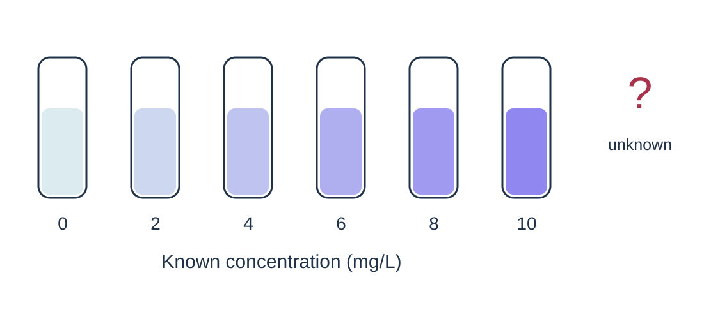
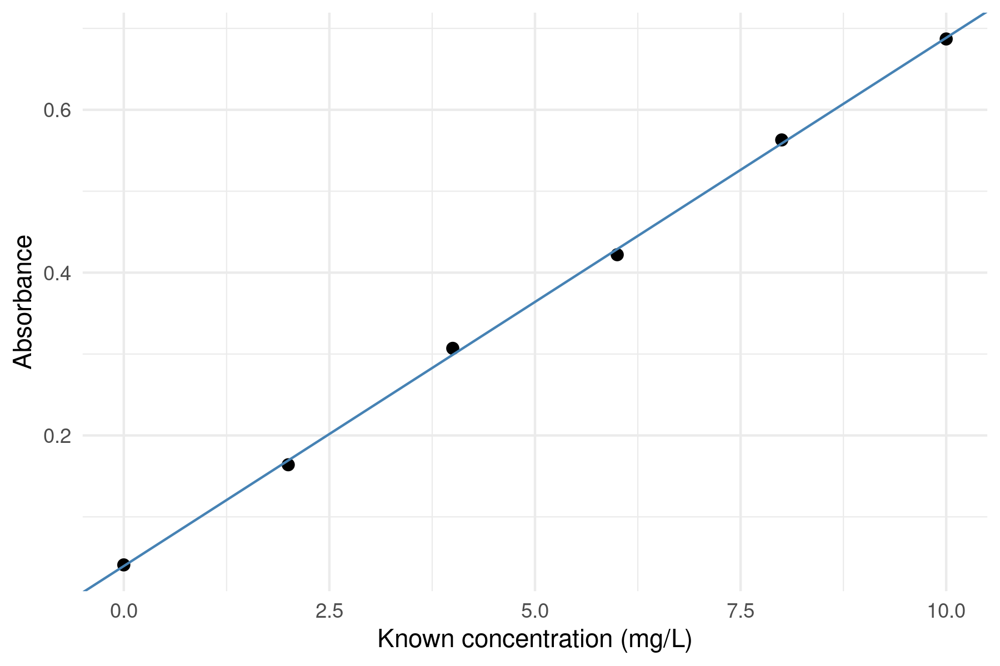
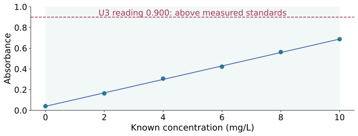
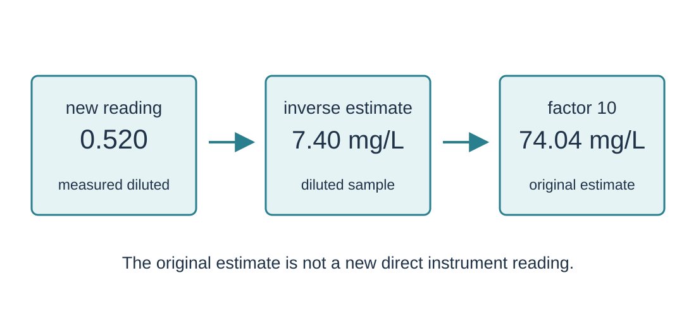
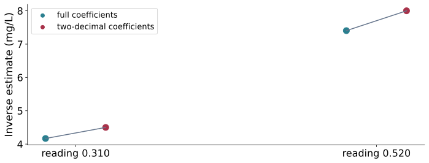
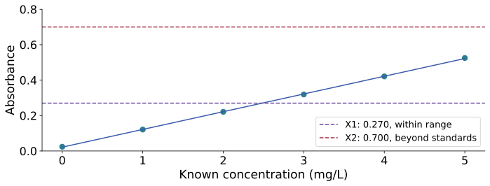

In a biochemistry lab you put your samples in a spectrophotometer or plate reader. The instrument does not report “mg/L”: it reports an absorbance, a number without units. To turn it into a concentration you first measure standards of known concentration, fit a line through them, and read your sample’s concentration backwards from that line. What concentration is in my sample, and when can I trust the number?
Today you will:
fit a calibration line with lm() and read its intercept and slope, with units;
check the residuals: how far each standard lies from the line;
convert an unknown sample’s absorbance into a concentration;
refuse to report a reading outside the standards, and use a dilution instead.
Days 17–18 compared means. Today and on Day 20 we fit straight lines; today the line is a measuring tool.
The problem: a reading is not a concentration
Unknown samples gave absorbance 0.310, 0.520 and 0.900.
On its own, 0.520 means nothing: another instrument, reagent batch or day gives a different reading for the same sample.
Six standards of known concentration, 0 to 10 mg/L, were measured with the samples (data/calibration.csv).
A standard is a calibration point, not a biological replicate.

Six standards of known concentration from 0 to 10 mg/L next to an unknown sample whose concentration we want.
Which variable goes on which axis?
We prepared the concentration and measured the absorbance.
So concentration goes on x and absorbance on y:
absorbance = intercept + slope × concentration
Intercept: the fitted reading at 0 mg/L, a background signal (the blank S1 read 0.041).
Slope: the increase in absorbance per 1 mg/L.
The line does not have to pass through every point.

Six prepared standards with absorbance rising from 0.041 to 0.687, and the fitted straight calibration line.
The standards read 0.041 to 0.687. within_range is TRUE only between those; & means both conditions must hold.
U3 is above the highest standard, so if_else() gives NA instead of a number. Its row and reading stay in the table.
write_csv() prints nothing; list.files() shows the saved file.
Why not just calculate U3?
The formula happily returns 13.3 mg/L for U3.
But no standard was measured above 10 mg/L. The line might bend there: many assays flatten out at high concentration.
A number you can calculate is not a number you can support.
Report U3 as “above the calibration range” and measure it again, diluted.

U3’s reading of 0.900 lies above every measured standard, outside the range checked by the calibration.
Bring a high sample into range by dilution
A separate sample was too concentrated, so a new measurement was made:
1.00 mL of sample plus solvent up to 10.00 mL total → dilution factor 10.00 / 1.00 = 10.
The diluted reading, 0.520, is inside the standards → 7.40 mg/L diluted.
Original ≈ 7.404 × 10 ≈ 74.04 mg/L.
The in-range reading is what was measured; the original concentration is calculated from it and the recorded volumes.

The new diluted reading 0.520 gives 7.40 mg/L, and multiplying by the factor 10 gives an original estimate of 74.04 mg/L.
Pitfall: rounded coefficients change the answer
Rounding to two decimals gives intercept 0.04 and slope 0.06.
Reading 0.310: 4.17 mg/L with the full coefficients, 4.50 mg/L with the rounded ones.
Reading 0.520: 7.40 versus 8.00 mg/L.
Calculate from coef(calibration_fit); round only the final number you write.

Inverse estimates for readings 0.310 and 0.520 are higher when the coefficients are rounded to two decimals than with the full coefficients.
A new instrument needs its own line
A second instrument: six standards 0 to 5 mg/L (data/calibration-transfer.csv).
Its own fit: intercept 0.0216, slope 0.1001 per mg/L. The old coefficients do not apply.
X1 read 0.270 → 2.48 mg/L, inside the standards (0.024 to 0.525).
X2 read 0.700 → above range: keep the row, flag it, measure again diluted.

On the second instrument’s calibration, X1 at 0.270 lies within the standard readings and X2 at 0.700 lies above all of them.
Write the result
“Absorbance increased linearly with concentration across six standards from 0 to 10 mg/L (slope 0.065 absorbance units per mg/L; residuals within ±0.008). Sample U1 was estimated at 4.17 mg/L and U2 at 7.40 mg/L. U3 (absorbance 0.900) was above the highest standard and needs to be diluted and measured again.”
Misreading
Better
“The line fits well, so any concentration is fine.”
Only between the lowest and highest standards.
“U3 is 13.3 mg/L.”
U3 is above the calibration range: no estimate.
“The intercept should be zero.”
It is the background reading; do not force it.
“7.40 mg/L is exact.”
It is a point estimate; uncertainty is not calculated here.
Summary
Concept
Key fact
Standard
Solution of known concentration, measured in the same run as the samples
Direction
Prepared concentration on x, measured absorbance on y: lm(absorbance ~ concentration_mg_l)
Coefficients
Intercept 0.0396 (background); slope 0.0649 absorbance per mg/L
Residual
Observed − fitted reading; look for curvature or one point far away
Inverse
(absorbance − intercept) / slope: U1 4.17, U2 7.40 mg/L
Range
Estimate only between the lowest and highest standard; U3 → NA with a reason
Dilution
New in-range reading × factor; 1 → 10 mL gives ×10 (7.40 → 74.04 mg/L)
Precision
Calculate with full coefficients; round only the reported result
New instrument
New standards, new fit (slope 0.1001 per mg/L for the transfer data)
Next (Day 20, association): the same lm() on two measured biological variables, where neither was set by us.
Now:open the Day 19 exercises. Make calibration-report.Rmd with the line and residual plots, the slope with units and the range-checked unknowns; save output/day19-unknowns.csv and both figures, then render.